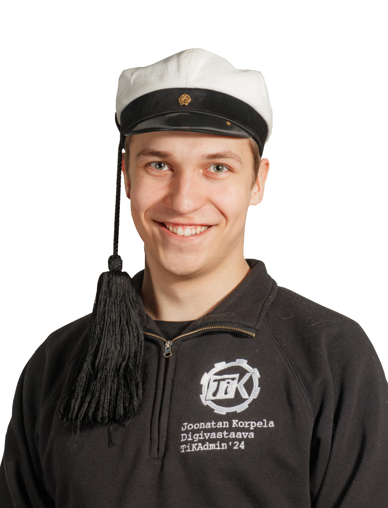

Hej, vad kul att du har hittat hit till min portfoliosida! Jag heter Joonatan och jag studerar datateknik på femte året vid Aalto-universitetet. Jag har programmerat redan länge och har mer än 5 års erfarenhet inom mjukvaruutvecklingsbranschen. För närvarande specialiserar jag mig på full-stack webbutveckling, men i framtiden skulle jag vilja utveckla andra typer av programvara också. Jag har programmerat på fritiden sedan gymnasiet och under den tiden har jag fått mycket erfarenhet av olika mjukvaruprojekt.
På fritiden gillar jag att vara utomhus, spela piano och badminton. Jag deltar också mycket i voluntärarbete, och jag har även varit phuxkapten på Tietokilta! Som phuxkapten har mitt jobb varit att introducera nya studenter till teknologkulturen och studentlivet vid Aalto-universitetet. Tidigare har jag också varit digitalkommitténs ordförande och annars varit aktiv i gillets verksamhet.
TypeScript, Java, Scala, Kotlin, C++
React, Svelte, NextJS, NodeJS, GraphQL, ExpressJS, Sequelize, Prisma, Playwright, Docker, Kubernetes
Git, Linux, Ansible, Terraform, OpenGL, Jenkins, Gitlab CI, Keycloak
Jira, Confluence, Figma